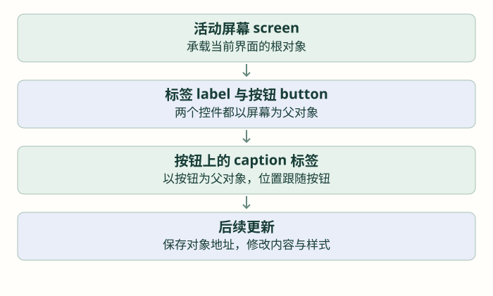

第一个界面：对象、标签与常用控件
从一行文字开始，先看懂对象指针和父子关系，再创建按钮、数值与进度条。
前置：完成上一篇「把 LVGL 接到屏幕：缓冲、刷新与时间」。各篇独立示例按说明替换，不把多份页面创建循环叠在一起。
从“画一个像素”到“创建一个标签”
前面画一个字需要准备点阵。使用 LVGL 时，可以创建标签对象，再给它一段文字，库负责字体查找、布局和绘制。界面由这样的对象组成：标签、按钮、图像、条形进度条都是控件。
对象不是已经刷到屏幕的一小块静态图片。它保存类型、位置、样式和内容，内容变化后库安排重绘。应用操作的是对象，像素到屏幕仍经上一篇的端口。

先认识 lv_obj_t 和父对象
lv_obj_t 是 LVGL 的对象类型。库创建对象后，返回 lv_obj_t * 指针，应用保存它，后续用这个指针设置同一个对象的属性；不自己定义一整个对象结构再猜它的成员。
每个普通控件属于一个父对象。例如屏幕是父对象，文字属于屏幕；按钮也可以成为父对象，按钮上的文字属于按钮。lv_scr_act() 无参数，返回默认显示器当前活动屏幕的对象指针。
先创建一个对象，再给它内容与位置
| 接口 | 参数与返回值 | 第一次怎么用 |
|---|---|---|
| lv_label_create(parent) | 父对象指针；返回新标签指针 | 父对象使用当前屏幕 |
| lv_label_set_text(label, text) | 标签指针、以零结尾的 C 字符串；无返回值 | 给标签写 hello |
| lv_obj_center(obj) | 对象指针；无返回值 | 在父对象中居中 |
| lv_obj_align(obj, align, x, y) | 对象、对齐方式、横纵偏移；无返回值 | 从父对象中心上移 30 像素 |
在显示端口、时基与处理循环均就绪后，初始化阶段执行一次
lv_obj_t *screen = lv_scr_act();
lv_obj_t *label = lv_label_create(screen);
lv_label_set_text(label, "Hello, LVGL");
lv_obj_center(label);按行读：第一行取得已有屏幕；第二行创建新标签，并把地址存进 label；第三行修改这个标签的文字；第四行把它居中。屏幕更新来自 handler 的后续处理，不是在函数内部重新初始化 SPI。
先使用英文，避免默认字体缺字与编码问题干扰第一步。若没有出现文字，先看基础图像是否正常，再查控件是否创建、是否被其他对象遮挡，以及处理函数是否继续运行。
坐标和指针的生命周期是两回事
局部变量 label 在函数返回后不再可用，但库创建的对象不会因此自动销毁；对象由 LVGL 管理。如果之后还要修改它，应把指针保存在页面状态中，或使用文件作用域指针。反过来，把指针保存得再久，也不能让已经被删除的对象继续存在。
更新数值时，修改已有标签，不重新创建整页
现在想把 Count: 0 改成 Count: 1。仍然调用 set_text 操作同一个 label。lv_label_set_text_fmt(label, format, ...) 无返回值，前两个参数是标签和格式字符串，后面按格式提供数值，与 C 的格式化输出思想相同。
下面先把创建与更新分成两个应用函数。lesson_label_create 无参数、无返回值，在初始化时调用一次；lesson_label_update 接收一个 unsigned 计数、无返回值，在普通 UI 执行路径按需调用。
两个函数放在应用 C 文件的文件作用域；不写进另一个函数体内
static lv_obj_t *count_label;
void lesson_label_create(void)
{
count_label = lv_label_create(lv_scr_act());
lv_label_set_text(count_label, "Count: 0");
lv_obj_center(count_label);
}
void lesson_label_update(unsigned count)
{
if (count_label != NULL) {
lv_label_set_text_fmt(count_label, "Count: %u", count);
}
}这里的 NULL 检查只说明“尚未保存指针”，不是对已删除对象的通用有效性检查。页面销毁时必须清理相应状态，后面会配套讲。这个简单例子目前保持页面不删除。
普通字符串和静态字符串不能混为一谈
本篇使用 lv_label_set_text，它会维护文字副本，因此函数里短暂存在的格式化字符数组可以交给它。lv_label_set_text_static 则让对象引用外部字符串，存储区必须在显示期间一直有效；“static”这个后缀不是把任何局部数组都自动变成静态存储。
再加一个按钮，理解对象树
lv_btn_create(parent) 返回按钮对象指针。lv_obj_set_size(obj, width, height) 设置像素尺寸、无返回值。先不处理点击，只把按钮和里面的文字显示出来：
继续放在一次性页面创建函数里；与顶部标签留出位置
lv_obj_t *button = lv_btn_create(lv_scr_act());
lv_obj_set_size(button, 110, 42);
lv_obj_align(button, LV_ALIGN_CENTER, 0, 35);
lv_obj_t *caption = lv_label_create(button);
lv_label_set_text(caption, "Add");
lv_obj_center(caption);caption 的父对象是 button，所以它随按钮移动，center 也是在按钮里面居中。若误把 caption 的父对象写成屏幕，移动按钮时文字不会跟着走。按钮出现还不代表已经接入触摸或物理按键，输入与事件在后续篇章单独建立。
再认识两个常用显示对象：lv_bar_create(parent) 返回进度条，lv_bar_set_range(bar,min,max) 设置范围，lv_bar_set_value(bar,value,anim) 设置值；后两者无返回值，anim 可以先用 LV_ANIM_OFF。单位标签与数值标签分开，可以避免数字长度变化把单位挤走。
可替换一个独立演示页面观察；先确认这些控件在 lv_conf.h 中启用
lv_obj_t *bar = lv_bar_create(lv_scr_act());
lv_obj_set_size(bar, 130, 12);
lv_obj_align(bar, LV_ALIGN_CENTER, 0, -45);
lv_bar_set_range(bar, 0, 100);
lv_bar_set_value(bar, 40, LV_ANIM_OFF);图像与字体先做到什么程度？
图像用 lv_img_create 创建对象，lv_img_set_src(img, source) 设置来源、无返回值。source 要是当前 LVGL 版本支持的图像描述或文件路径，不能把上一节的单色数组直接当作描述对象。仓库 ui_hr.c 的心形图标是 lv_img_dsc_t 图像描述；中文需要包含相应字形的字体，UTF-8 字符串本身不会生成字形。资产格式在下一篇与样式一起处理。
练习先完成标签、按钮、进度条三个对象，并在纸上画出父子关系；再用代码更新数值。回到 ui_hr.c 的创建函数，辨认哪些行创建对象、哪些行只是修改对象，不急着同时阅读动画和曲线。
检查理解
参考与项目源码
- LVGL 8.3 · overview/object
- LVGL 8.3 · widgets/core/label
- LVGL 8.3 · widgets/core/btn
- LVGL 8.3 · widgets/core/bar
- LVGL 8.3 · widgets/core/img
按仓库实际的 LVGL 8.3.11 与本地头文件组织接口。教学图与网页模型不是设备实测；源码引用均使用 GitHub 文件页。完整索引见 资料来源。